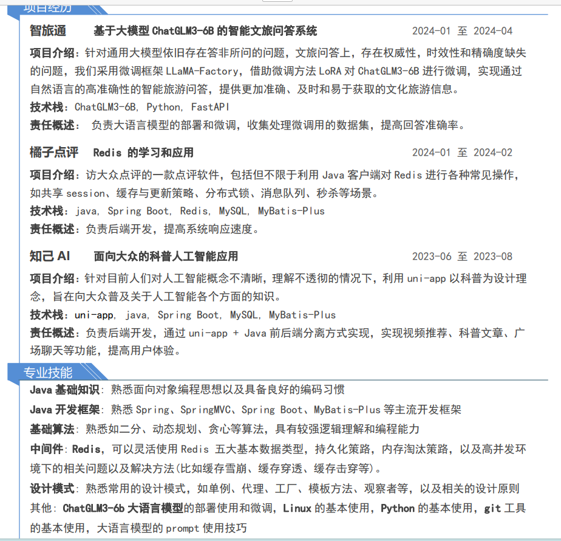

# 第二次面试准备
我的简历，又又又优化了一下

# 了解一下公司
# 公司介绍
- 云行计划技术布道者
- 成立于 2009 年，坐落于杭州湾畔，我们自认为是中国比较优秀的互联网服务提供商。自成立以来，专注于云计算技术、移动互联应用、B/S 架构系统研发，为企业客户的互联网应用提供一站式服务。
（来自 boss）
# 官网
这个地方加载的很慢，如何优化
<img src="image-20240623165917959.png" alt="image-20240623165917959"/>
# 岗位要求
- 扎实的 Java
- 熟练使用 Linux
- 熟练 Mysql、PostgreSQL
- Spring、Dubbo
# 自我介绍
# 项目
# 基础知识
# Redis
见 面试准备一 以及 Redis 学习记录
# Linux
……
# Java
……
# Spring、PostgreSQL
# 什么是 Spring 框架？Spring 框架有哪些主要模块？
Spring 是一个轻量级的 JavaEE 框架，它主要解决企业应用中的复杂性问题。
Spring 框架有三个核心部分: lOC 容器、AOP 和数据访问 / 集成层。
lOC 容器提供了一种对象创建和对象之间关系管理的机制，以实现松散耦合和可扩展性，
AOP 提供了一种很好的方式来实现横向关注点的处理，如事务管理，安全检查，缓存等。
数据访问 / 集成层则提供了许多针对不同数据持久化技术的实现，比如 JDBC，ORM 和 NoSQL。
Spring 框架本身亦是按照设计模式精心打造，这使得我们可以在开发环境中安心的集成 Spring 框架，不必担心 Spring 是如何在后台进行工作的。spring 框架至今已集成了 20 多个模块。这些模块主要被分如下图所示的核心容器、数据访问 / 集成、Web、AOP (面向切面编程)、工具、消息和测试模块
生态、基石
# Spring 优点
轻量级
控制反转（IOC）、依赖注入
切片编程（AOP）
容器
MVC 框架
事务管理
异常处理
可拓展性
# 谈一下你对于 springIOC 的理解
控制反转
整个 IOC 容器创建的流程和步骤如下：向 bean 工厂中设置一些参数、加载解析 bean 对象、BeanPostProcessor 的注册功能、通过反射的方式讲 BeanDefinition 对象实例化成具体的 bean 对象、bean 对象的初始化过程、生成完整的 bean 对象，通过 getBean 方法可以直接获取、销毁过程
# bean 的生命周期
……
# 自动装配的各种模式
byName
byType、constructor
autodetect、no
# BeanFactory 和 ApplicationContext 有什么区别？
加载：BeanFactory 采用的是 ** 延迟加载（lazy-loading）** 的方式，即只有在使用到某个 Bean 时 才会对该 Bean 进行加载和实例化。而 ApplicationContext 则是在容器启动 时，一次性创建所有的 Bean。
创建：BeanFactory 通常以编程的方式创建，需要手动编写代码来配置和获取 Bean。而 ApplicationContext 除了支持编程方式创建外，还支持声明方式创建，如使用 XML 配置文件或注解 来配置 Bean。
功能：ApplicationContext 接口作为 BeanFactory 的派生，不仅提供了 BeanFactory 所具有的功 能，还提供了更完整的框架功能。
# spring AOP 的理解
面向切面编程（AOP）：允许程序员模块化横向业务逻辑，或定义核心部分的功能，例如日志管理和事 务管理。
在 Spring AOP 中，切面通过带有 **@Aspect** 注解的类实现
通知 (Advice)：通知表示在方法执行前后需要执行的动作。实际上它是 Spring AOP 框架在程序执行过程 中触发的一些代码。有前置通知、后置通知、环绕通知等
动态代理：代理是将通知应用到目标对象后创建的对象。从客户端的角度看，代理对象和目标对象是一样 的。
# spring 中用到了哪些设计模式
- 单例模式：bean 默认都是单例的
- 原型模式：指定作用域为 prototype
- 工厂模式：BeanFactory
- 模板方法：postProcessBeanFactory,onRefresh,initPropertyValue
- 策略模式：XmlBeanDefinitionReader,PropertiesBeanDefinitionReader
- 观察者模式：listener，event，multicast
- 适配器模式：Adapter
- 装饰者模式：BeanWrapper
- 责任链模式：使用 aop 的时候会先生成一个拦截器链
- 代理模式：动态代理
- 委托者模式：delegate
# MySQL
- 索引：b + 树、哈希、位图
- MySQL 优化：索引、查询优化（少子查询、模糊查询、全表查询）、表结构优化、缓存优化（Redis）、硬件优化
- 慢查询：查询花费时间很多的日志
- 死锁：避免大量查询、给事务加锁、增加悲观锁、设置合理超时时间
- 优化大量数据插入：每一次插入的数量变多（合适数量），避免死锁，占用大量系统资源，磁盘空间
# Dubbo
随着互联网的发展，网站应用的规模不断扩大，常规的垂直应用架构已无法应对，分布式服务架构以及流动计算架构势在必行，亟需一个治理系统确保架构有条不紊的演进。
Apache Dubbo 最初是为了解决阿里巴巴内部的微服务架构问题而设计并开发的，最早在 2008 年，阿里巴巴就将 Dubbo 捐献到开源社区。在 2017 年，Dubbo 被正式捐献 Apache 软件基金会并成为 Apache 顶级项目，开始了一段新的征程。
# 为什么需要 Dubbo，它能做什么？
按照微服务架构的定义，采用它的组织能够很好的提高业务迭代效率与系统稳定性，但前提是要先能保证微服务按照期望的方式运行，要做到这一点需要解决服务拆分与定义、数据通信、地址发现、流量管理、数据一致性、系统容错能力等一系列问题。
Dubbo 可以帮助解决如下微服务实践问题：
微服务编程范式和工具
Dubbo 支持基于 IDL 或语言特定方式的服务定义，提供多种形式的服务调用形式（如同步、异步、流式等）
高性能的 RPC 通信
Dubbo 帮助解决微服务组件之间的通信问题，提供了基于 HTTP、HTTP/2、TCP 等的多种高性能通信协议实现，并支持序列化协议扩展，在实现上解决网络连接管理、数据传输等基础问题。
微服务监控与治理
Dubbo 官方提供的服务发现、动态配置、负载均衡、流量路由等基础组件可以很好的帮助解决微服务基础实践的问题。除此之外，您还可以用 Admin 控制台监控微服务状态，通过周边生态完成限流降级、数据一致性、链路追踪等能力。
部署在多种环境
Dubbo 服务可以直接部署在容器、Kubernetes、Service Mesh 等多种架构下。
活跃的社区
Dubbo 项目托管在 Apache 社区，有来自国际、国内的活跃贡献者维护着超 10 个生态项目，贡献者包括来自海外、阿里巴巴、工商银行、携程、蚂蚁、腾讯等知名企业技术专家，确保 Dubbo 及时解决项目缺陷、需求及安全漏洞，跟进业界最新技术发展趋势。
庞大的用户群体
Dubbo3 已在阿里巴巴成功落地，实现了对老版本 HSF2 框架全面升级，成为阿里集团面向云原生时代的统一服务框架底座，庞大的用户群体是 Dubbo 保持稳定性、需求来源、先进性的基础。
# Dubbo 不是什么？
不是应用开发框架的替代者
Dubbo 设计为让开发者以主流的应用开发框架的开发模式工作，它不是各个语言应用开发框架的替代者，如它不是 Spring/Spring Boot 的竞争者，当你使用 Spring 时，Dubbo 可以无缝的与 Spring & Spring Boot 集成在一起。
不仅仅只是一款 RPC 框架
Dubbo 提供了内置 RPC 通信协议实现，但它不仅仅是一款 RPC 框架。首先，它不绑定某一个具体的 RPC 协议，开发者可以在基于 Dubbo 开发的微服务体系中使用多种通信协议；其次，除了 RPC 通信之外，Dubbo 提供了丰富的服务治理能力与生态。
不是 gRPC 协议的替代品
Dubbo 支持基于 gRPC 作为底层通信协议，在 Dubbo 模式下使用 gRPC 可以带来更好的开发体验，享有统一的编程模型和更低的服务治理接入成本
不只有 Java 语言实现
自 Dubbo3 开始，Dubbo 提供了 Java、Golang、Rust、Node.js 等多语言实现，未来会有更多的语言实现。
# 知识拓展
# 引用
Dubbo 介绍 | Apache Dubbo